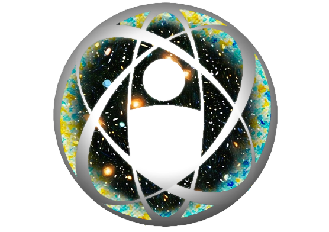

Coordenação de Cosmologia, Astrofísica e Interações Fundamentais do CBPF
Membros
Pesquisa
Agenda de atividades
English
Agenda de Atividades
Veja abaixo o calendário de eventos, reuniões e seminários do grupo COSMO-CBPF.